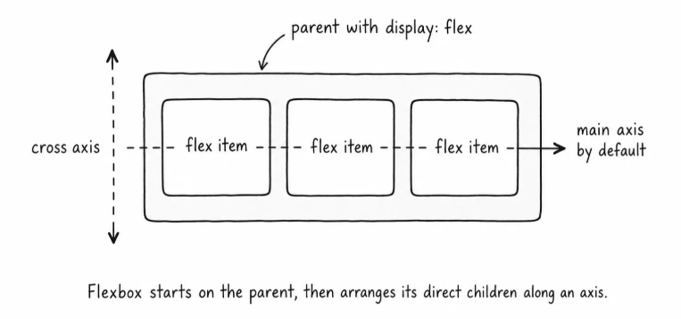
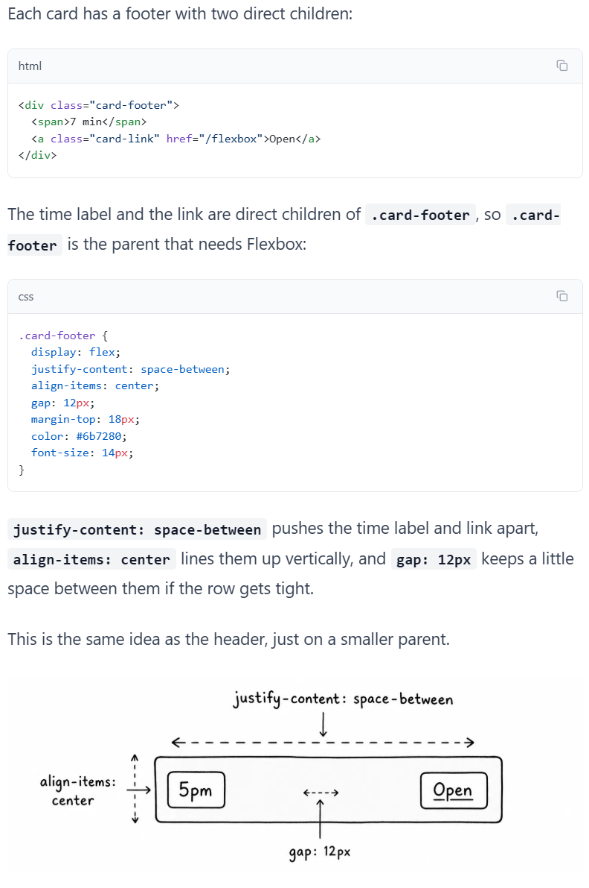

Layout
Flexbox basics
Use a row or column layout when a group of items needs alignment and spacing.
CSS practice
Flexbox helps groups of items line up, share space, and wrap when needed.
Flexbox is a parent-child layout mode. You put display: flex on a parent element, and the direct children of that parent become flex items.
By default, when you apply display: flex on an element, flexbox arranges the direct children in a row. That row is called the main axis. The opposite direction is called the cross axis.

Flexbox is not only for big page sections. It is also useful for small rows inside components.
Each card has a footer with two direct children.
The time label and the link are direct children of .card-footer, so .card-footer is the parent that needs Flexbox.
justify-content: space-between pushes the time label and link apart
align-items: center lines them up vertically
ap: 12px keeps a little space between them if the row gets tight.

Layout
Use a row or column layout when a group of items needs alignment and spacing.
Practice
Compare padding, margin, and gap so each kind of space has a clear job.
Review
Inspect the final layout and confirm which elements became flex items.
The pattern is the same each time: choose the parent, decide whether its direct children should form a row or column, then use gap, justify-content, align-items, wrapping, or flexible item sizing to solve the layout problem.